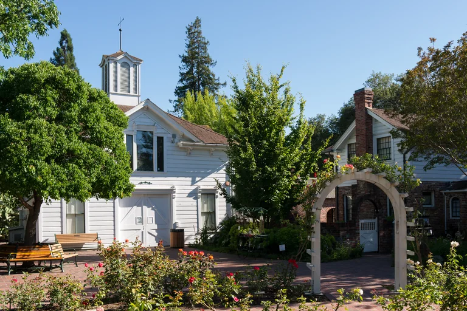

December is when downtown Santa Rosa feels most like a small town. A historic garden opens its doors for the holidays, Snoopy takes to the ice, and the museums line up winter programs and new exhibitions. Most of the big dates cluster in the first two weekends of the month, so it pays to pick your weekend first. Here is a 2026 guide to what is on, with dates verified on each organizer's own site.
First weekend: December 4 to 6
This weekend has the most going on, and it is the one we would pick for a first holiday visit.
Luther Burbank Home & Gardens Holiday Open House. The 46th annual Open House runs Saturday and Sunday, December 5 and 6, 2026, from 10 a.m. to 4 p.m. The horticulturist's home is decked out in holiday finery, Kris and Mrs. Kringle are on hand, and there are cookies in the greenhouse and a gift shop to browse. Entry is $5 for ages 12 and older. The home sits at Santa Rosa and Sonoma Avenues, a short walk from Old Courthouse Square. Free parking is available at First and D Streets, and free rides on Rosie the Trolley connect the Open House with the Handmade Holiday Crafts Fair at the Finley Community Center.
Free holiday skating shows at Snoopy's Home Ice. The rink at 1667 West Steele Lane hosts free outdoor "Merry & Bright" shows, sponsored by Sonoma Clean Power, with no tickets required:
- Friday, December 4: 5 and 6 p.m.
- Saturday, December 5: 2, 3, 5 and 6 p.m.
- Sunday, December 6: 1, 2 and 3 p.m.
Kids Night at the Schulz Museum. On Saturday, December 5, from 5:30 to 9 p.m., the Charles M. Schulz Museum runs a Kids Night for ages 5 to 10. Advance registration is required.

Second weekend: December 11 to 13
A Very Merry Ice Show. Redwood Ice Theatre Company's professional holiday show plays Snoopy's Home Ice on Friday, December 11, at 8 p.m. and Saturday, December 12, at 6 and 8 p.m. Tickets go on sale October 26, and this is the one to book early.
Gingerbread Doghouse Workshops. The Schulz Museum runs its Gingerbread Doghouse Workshops on Saturday and Sunday, December 12 and 13. Check the museum's events page for registration. The museum also hosts its Second Saturday Cartoonist session on December 12 from 1 to 3 p.m.
A new exhibition downtown. The Museum of Sonoma County opens Golden California: Landscape Masters of the American West on December 12. It runs through April 11, 2027, alongside the 37th Annual Artistry in Wood show, which is on through January 31, 2027. The museum is at 425 7th Street, open Wednesday to Sunday, 11 a.m. to 5 p.m. Admission is $12 for adults, $10 for seniors 62 and over, $6 for students, and free for children 13 and under.
The rest of the month
- Holiday public skating runs at Snoopy's Home Ice through November and December. Weekend and holiday sessions cost $14 for ages 12 and over and $12 for children 11 and under, plus $4 skate rental, sold in person only.
- "Tis the Season" starring Snoopy, the Santa Rosa Figure Skating Club's show, is on Monday, December 28, at 4:30 and 6 p.m.
- Happy New Year, Charlie Brown! runs at the Schulz Museum on Thursday, December 31, from 10 a.m. to 4 p.m., with balloon drops at noon and 3 p.m. It is a family-friendly way to mark the new year before the evening plans begin.
On Old Courthouse Square, the Winter Lights season traditionally opens the day after Thanksgiving and runs into the new year. Downtown Santa Rosa had not posted its 2026 schedule when we published, so check its events calendar for the tree lighting and any rink dates.
Good to know
- The Schulz Museum is closed every Tuesday and on Christmas Eve and Christmas Day.
- The Museum of Sonoma County is closed Monday and Tuesday, and on Christmas Eve and Christmas Day.
- The Schulz Museum sells tickets on arrival only: $15 adults, $10 seniors, $7 students and youth.
- Book ice show tickets and Schulz workshops ahead; the free outdoor rink shows need no tickets.
Where to stay in December
For the first weekend especially, a downtown base keeps everything close: the Burbank Open House and the Museum of Sonoma County are on foot, and the rink and the Schulz Museum are about ten minutes by car. Hotel E is in a historic building right on Old Courthouse Square, with continental breakfast, an evening happy hour and valet parking. Art House Santa Rosa is a few blocks away on 7th Street. For more ideas between events, see our guide to things to do in Santa Rosa.
Plan your stay downtown
Browse hotels, restaurants, wineries and attractions, all in one place.
Open the directory